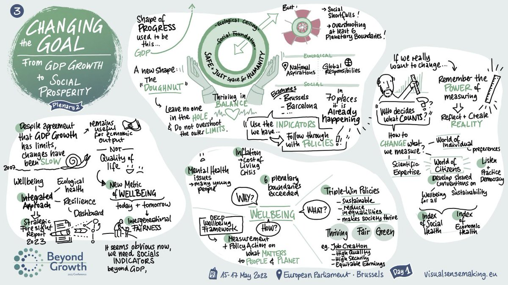

WONDERFUL WORDS ON BEYOND GROWTH 2023 (Ed)
The Twitter feed of - @JKSteinberger
Prof Julia S. #ClimateAction #FightFascism
@JKSteinberger
As floods & fires rise, oceans boil & ice melts, and 'safe' temperatures are breached, something momentous just happened in the heart of the EU. No one has heard about it: journalists were present, but their editors refused to publish . , please RT. #BeyondGrowth2023 1/
For 3 full days the EU parliament hosted thousands of scientists, activists and policy-makers charting a future beyond growth. The talks & discussions were recorded and are now available to all. Thousands attended, thousands more followed online. 2/ https://beyond-growth-2023.eu/programme/
Topics covered planetary boundaries, trade, finance, fiscal policy, global South, decolonisation, gender, justice, well-being, social policies. Every panel included major advances in understanding. Together, the conference represents a monumental coming of age of post-growth. 3/

Being part of this event was a privilege and an honour. I wish I could share with you what being in such a space opens up in terms of determination to collaborate for a liveable world. The sheer electric energy of being in a room with so many young, critical, dedicated humans. 4/
As a nerd & Lord of the Rings fan, I'll summarise it as: the EU Parliament became Rivendell,
was Elrond, so many speakers, from
to
were Gandalf, Aragorn, Legolas, Gimli... 5/
I was a hobbit. Possibly Pippin? But my main point is please, for the love of god, choose a talk from this amazing list, watch it and share some insights using the #BeyondGrowth2023 hashtag. Because despite its magnitude, NO media covered the event. https://beyond-growth-2023.eu/programme/ 6/
Because here is the thing. Every. Single. Journalist. who was there (and there were many, from major outlets all over Europe and the world) that I spoke to, said 'my editor refuses to print any story critical of economic growth.' Every. Single. One. #BeyondGrowth2023 7/
This is insane verging on criminal and shows the dangerous ideology of economic growth as our secular religion, completely blinding us to the possible economic alternatives that could preserve a liveable planet. But it is the current reality. So please. I am not good at this. 8/
But some of you are. Some of you are very, very good at making noise and news. Please RT and amplify #BeyondGrowth2023 content, the speakers, the audience, the topics, the debates. Be part of cracking the foundations of our secular religion of growth, our modern Moloch. End/
Prof Julia S. #ClimateAction #FightFascism
@JKSteinberger
SOURCE: TWITTER